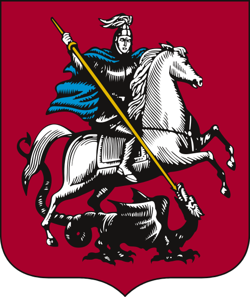

Зилант как государственный символ
Дискуссия о восстановлении Зиланта в качестве символа города возобновилась в 1990-х годах. Сторонники Зиланта ссылались на государственный знак отличия Казанского ханства. Некоторые татарские националисты, однако, отвергли использование Аждаха-Зиланта как злого символа агрессии, унижающего татар и их государственность. Они также отметили, что Зилант может быть истолкован как дракон, убитый Святым Георгием, изображенным на гербе Москвы. Согласно этой популярной интерпретации, Святой Георгий символизировал бы Московию, а "дракон" - Казань.
В итоге было решено, что Зилант должен ассоциироваться с Ак Йыланом (белой змеей) как положительным тюркским духом. Во время празднования тысячелетия Казани в 2005 году Зилант был восстановлен в качестве символа Казани. Теперь он изображен на гербе Казани, а также на флаге города.